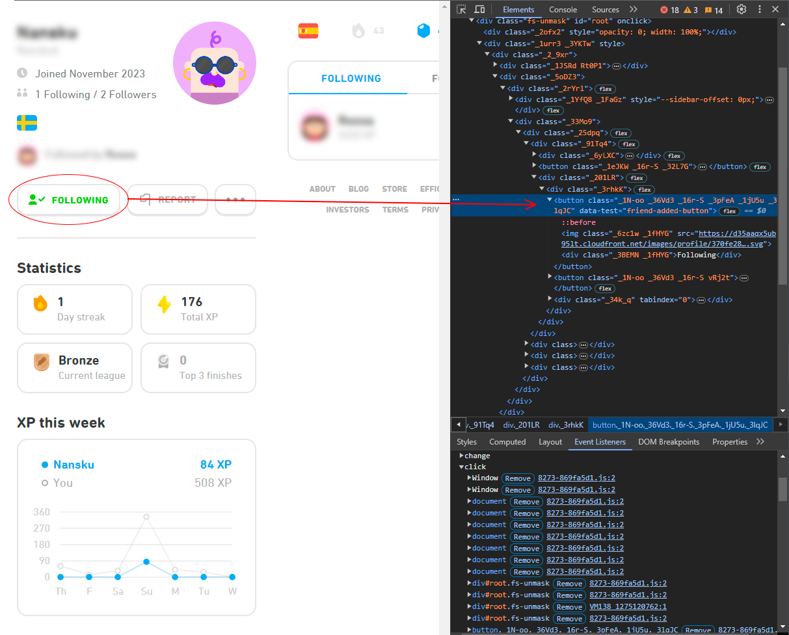
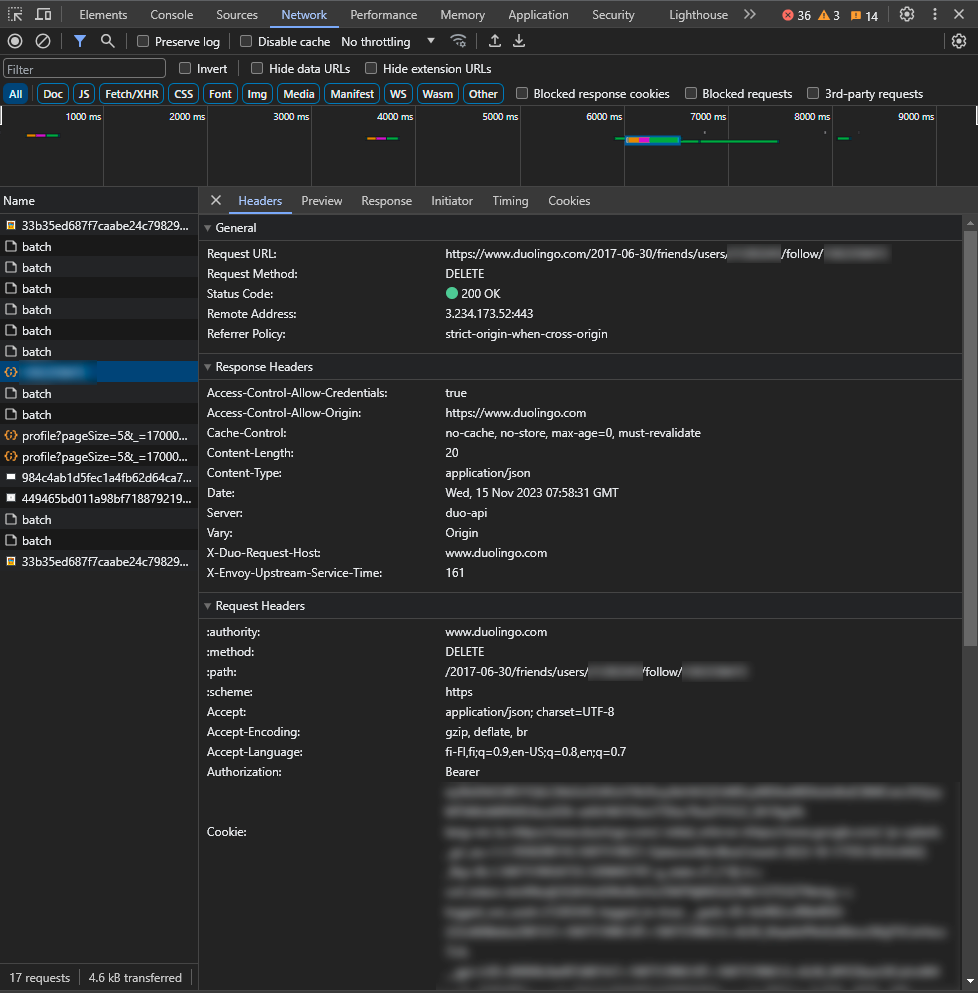

How to bulk unfollow on Duolingo?
The boring part: some background
Like probably all of us, I registered on Duolingo years ago, forgot about it and have restarted using it periodically a few times ever since. Now for the latest time, my so and I started learning Spanish on Duolingo 44 days ago (my greatest streak yet!). We have been enjoying the friends quest feature, where we can work together to complete lessons and receive a price at the end. Here comes the problem: Duolingo doesn't always allow me to choose my friends quest partner.
That might not seem so bad: you probably follow a fiew schoolmates and work friends. If you absolutely don't want to play with them, just go through their profiles and remove them. Not in my case. I followed a total of 319 people. I suspect that my account had been hacked, or just accessed because I had been using a generic password that has been leaked in a few password leaks. I just didn't care about my Duolingo gems enough to change the password or even check if it has been accessed. (Now it has been changed to a secure one!)
I noticed the amount of friends this time when I started playing, but there is no mass-unfollow -option, so I didn't bother clicking through all the profiles. Duolingo loads the profile pages very slowly and you can't unsubscribe from anywhere else than the profile page. So in order to be able to play the friends quest only with my girlfriend and not a bunch of random people, I had to find an easier way! I also had sent Duolingo a support request about this, but have received no answer.
The problem
I need to unfollow 319 people on duolingo. Only way Duolingo provides me, is to click through all of their profiles and unfollow there. The UI is quite slow, so I want to hack it a little.
What happens when you unfollow a person, and can you replicate it
If you open up duolingo in a browser and go to your profile page, you can see a list of people you are following. From devtools or just clicking a profile, you can see that you are taken to the address: https://duolingo.com/u/<id>. That is forwarded to https://duolingo/profile/<profilename>. Can we do something with these? Probably, but let's see what happens when I click the ´following´ button.

From devtools I see by inspecting the button element that there are quite a few event handlers on the button, and they lead to cryptic anonymoys functions which are hard to follow. I think I could have found out what happens by following the code, but first I decided to check the network profiler when I click the button.

Jackpot! There is a DELETE request on https://www.duolingo.com/2017-06-30/friends/users/<my-user-id>/follow/<their-user-id>
I followed the person again, and ran await fetch("https://www.duolingo.com/2017-06-30/friends/users/<my-user-id>/follow/<their-user-id>", {method: "DELETE"}) from the developer console, which succeeded! After refreshing the page, I did not anymore appear to follow them. No problems with authentication because my browser was already authenticated.
Can I do this en masse?
Remember earlier when I said that on your profile page you can see from devtools that the followed profiles link to https://duolingo.com/u/<id>? That's amazing, because I could go to my profile page, copy the outer html of the div containing followed profiles, and grep all the links. I did this by copying the raw html to sublime text, copying all matches for duolingo.com/u/.+?" to a new window and replacing duolingo.com/u/ with a ". Then I just needed to append commas to all the lines except the last one, and turn it into an Array like this:
const ids = [
"<id-1>",
"<id-2>",
"<id-3>",
...
"<id-319>"
]
Which I could just paste into the developer console. Then I could reate an async function for unfollowing and id:
async function unfollow(id) {
await fetch(`https://duolingo.com/2017-06-30/friends/users/<my-user-id>/follow/${id}`, {method: "DELETE"})
}
And just execute the function for each of them
ids.map(id => { unfollow(id) })
And somewhat miraclously this actually worked. I refreshed the page and there was only one person, but after clicking their profile I didn't see them either anymore. My following-count was 24 for some reason, but that cahce had expired by this morning, and now everything is good!
Follow-up
I really didn't think this would be so easy. I thought there would for sure be some auth problems or that duolingo would ban me for hitting the API 300 times in a second. But no, it just worked. And all of this took me like 15 minutes, which must be a personal best. Usually these kinds of ideas become weekend-long projects that end up abandoned after a week or so.
I'm not sure if this will be helpfull for anyone, but maybe it will, or maybe someone learns a thing or two. This technique might work on other sites as well. So if you have a profile that has been accessed at one point that has been farming xp for someone else, maybe go and try if you could stop that this easily.
Happy hacking!